السلسلة 54
السيارة (صنف B) · 40 سؤال بالصوت. حاول تجاوب بوحدك، من بعد شوف الجواب.
السؤال 1
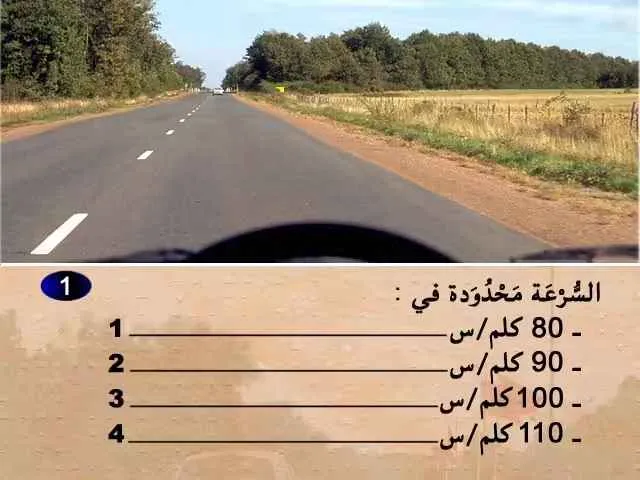
بيّن الجواب
الجواب الصحيح: 3
بما أنها طريق وطنية فالسرعة محددة ف100 كلم فالساعة.
السؤال 2
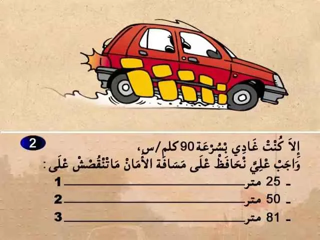
بيّن الجواب
الجواب الصحيح: 2
مسافة الأمان فهاد الحالة هي ضرب 9 ف 6 النتيجة 54، هادا اقرب عدد ل 50 متر.
السؤال 3
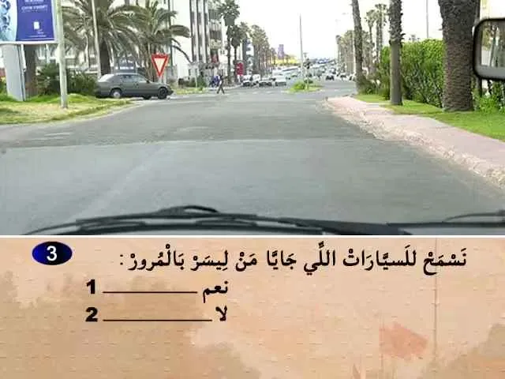
بيّن الجواب
الجواب الصحيح: 2
الطوموبيل لي على اليسار عندها لافتة ما عندهاش حق الأسبقية، يعني ما نسمحش ليها تدوز.
السؤال 4
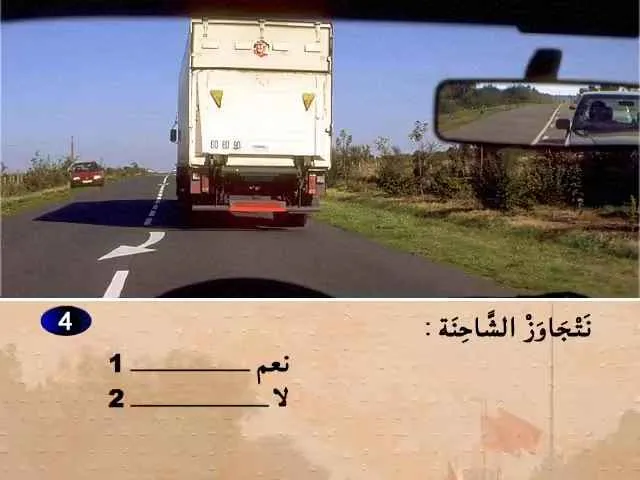
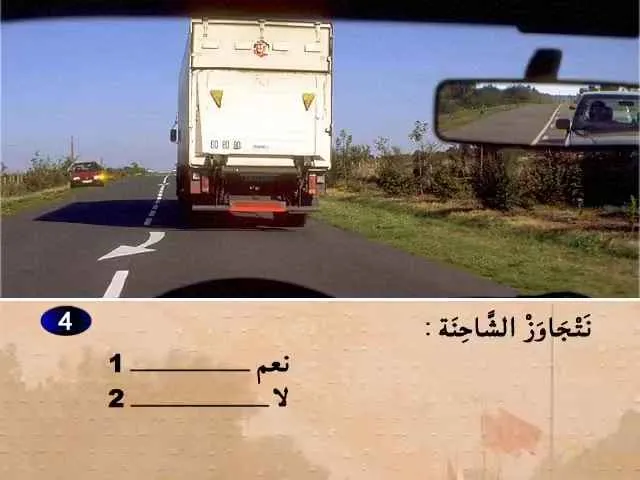
بيّن الجواب
الجواب الصحيح: 2
التشوير الطرقي كيخليني نتجاوز ولكن الطوموبيل الحمرا غادية تدخل لمسارها، يعني ما يمكنش نتجاوز الكاميو دابا.
السؤال 5
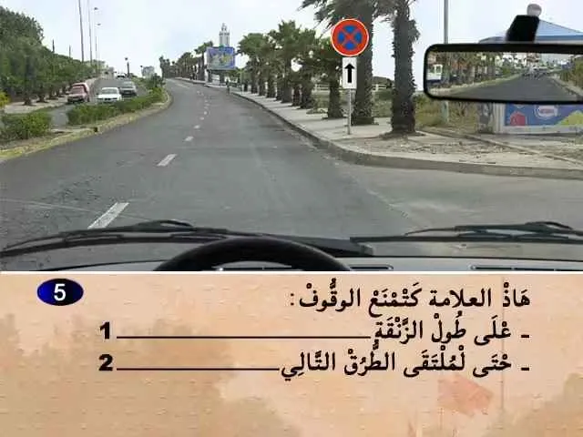
بيّن الجواب
الجواب الصحيح: 2
اللافتة الطرقية كتقول ممنوع الوقوف والتوقف، وفهاد الحالة ممنوع الوقوف حتى ملتقى الطرق القادم.
السؤال 6
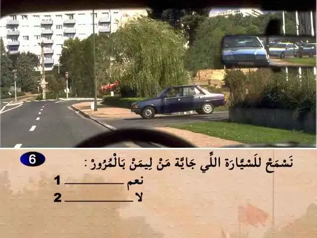
بيّن الجواب
الجواب الصحيح: 2
حنا فطريق رئيسية ماشي فملتقى الطرق، فهاد الحالة عندنا حق الأسبقية، وما نسمحوش للطوموبيل لي على اليمين تدوز.
السؤال 7
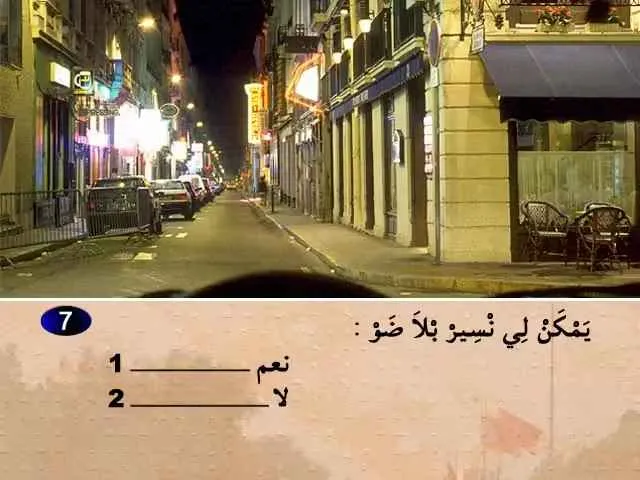
بيّن الجواب
الجواب الصحيح: 2
فالليل خاصنا نسيرو بأضواء الوضع والتقابل حتى إلا كانت الإنارة، فالليل أضواء الطوموبيل ضرورية. يعني ما يمكنش نسير بلا أضواء.
السؤال 8
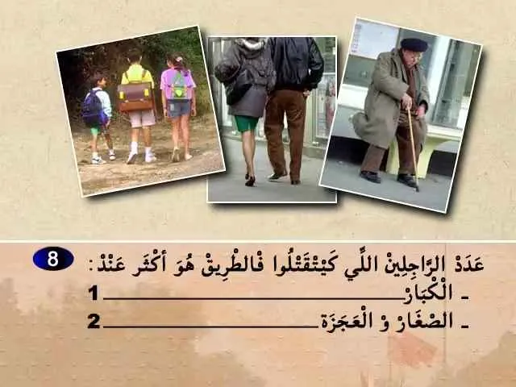
بيّن الجواب
الجواب الصحيح: 2
الإحصائيات كتقول أن المسنين والأطفال هما الفئة الأكثر عرضة لحوادث السير.
السؤال 9
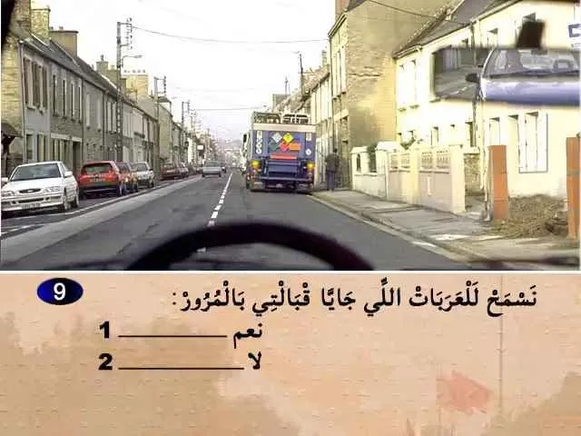
بيّن الجواب
الجواب الصحيح: 1
كاينة شاحنة واقفة فالطريق فجيهتي، وفي الجهة الأخرى كاين طوموبيلات جاية، يعني خاصني نسمح ليهم يمروا حيث هما فمسلكهم ومن بعد نكمل الطريق.
السؤال 10
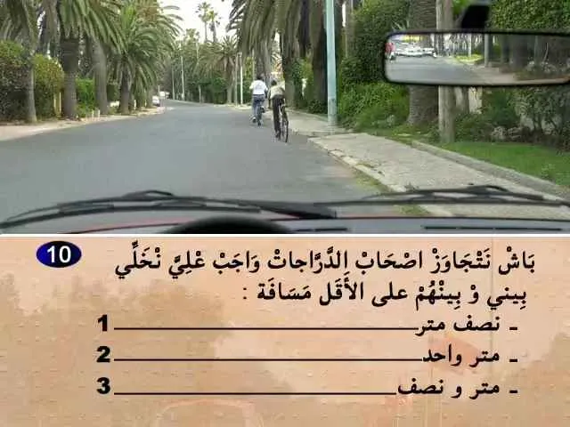
بيّن الجواب
الجواب الصحيح: 2
القاعدة كتقول بالنسبة لتجاوز الدراجات داخل المدينة خاص نخلّي مسافة متر، وخارج المدينة متر ونص، فهاد الحالة حنا فالمدينة يعني خاصني نخلّي متر على الأقل بيني وبين الدراجات.
السؤال 11
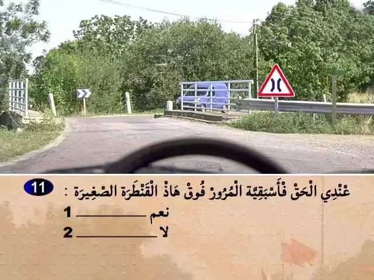
بيّن الجواب
الجواب الصحيح: 2
فالقنطرة ما كايناش الأسبقية، الأسبقية كتكون للعربة اللي دخلت لولا للقنطرة هي اللي دوز.
السؤال 12
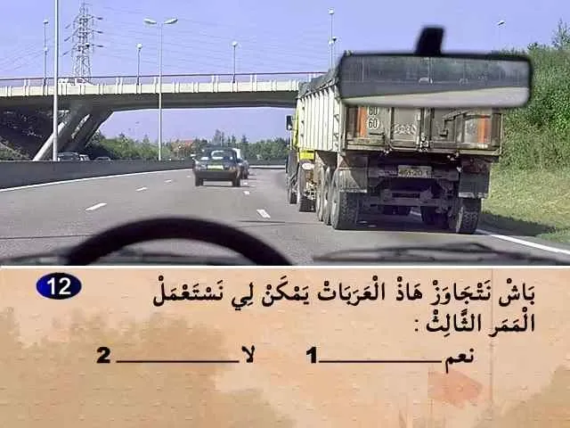
بيّن الجواب
الجواب الصحيح: 1
بحيث حنا فطريق سيار، وما كايناش طوموبيلات ورانا غادية تتجاوز والممر الثالث خاوي فيمكننا نستعملوه للتجاوز ماكينش مشكل.
السؤال 13
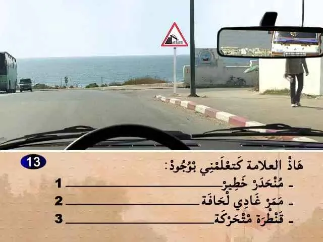
بيّن الجواب
الجواب الصحيح: 2
اللافتة كتقول أنه ممر غادي للحافة.
السؤال 14
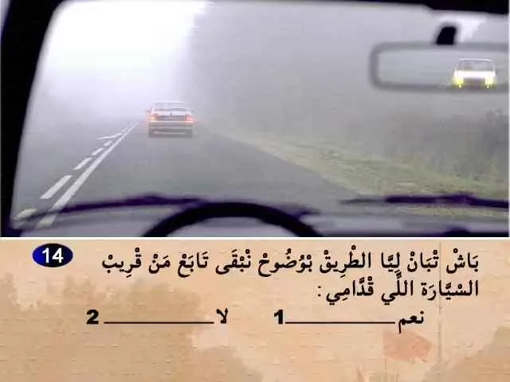
بيّن الجواب
الجواب الصحيح: 2
فحالة الضباب خاص نستعملو ضوء التقابل والأضواء القدامية واللّورانية، وفحالة الضباب أو الجو السيئ مسافة الأمان كتضاعف يعني خاص نخلّي مسافة أكبر بيني وبين الطوموبيل وما نقربش منها.
السؤال 15
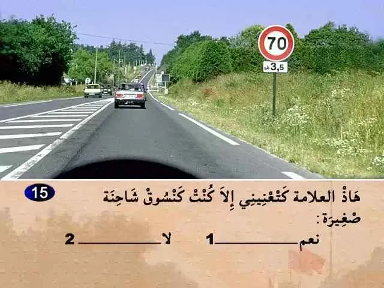
بيّن الجواب
الجواب الصحيح: 2
اللافتة الطرقية كتخص الكاميوات الكبيرة أكثر من 3.5 طن، ما كتخصنيش.
السؤال 16
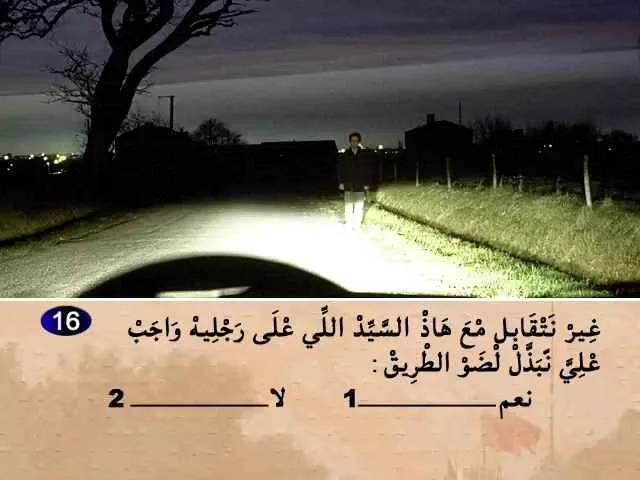
بيّن الجواب
الجواب الصحيح: 1
نعم، خاصنا نبدلو الأضواء باش ما نعميوش الشخص، ومن بعد ما ندوزو يمكننا نرجعو الأضواء كيف كانو.
السؤال 17
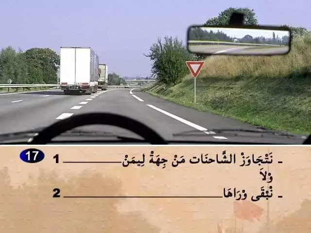
بيّن الجواب
الجواب الصحيح: 2
حنا فممر خاص بالعربات البطيئة، وما يمكنش نتجاوزو من جيهة ليمن، يعني خاص نبقاو ورا الشاحنات وما نتجاوزوش.
السؤال 18
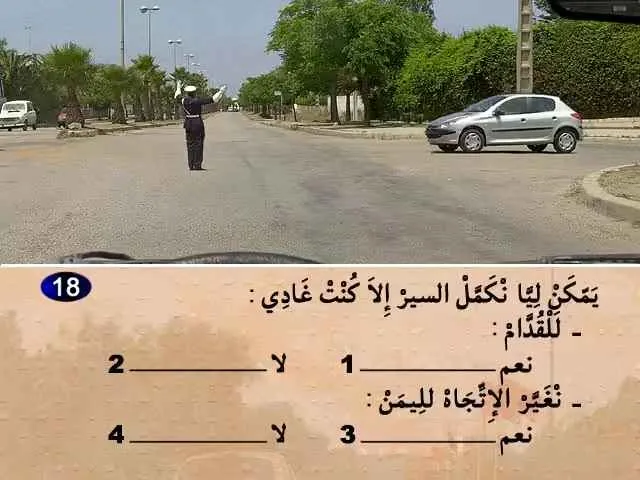
بيّن الجواب
الجواب الصحيح: 2 و 4
بالنسبة للبوليسي، إلا كان معطينا ظهره أو كيشوف لينا مباشرة ما عندناش الحق ندوزو أو نبدلو الاتجاه، خاصنا نوقفو ونتسناو إشاراته باش نكملو السير.
السؤال 19
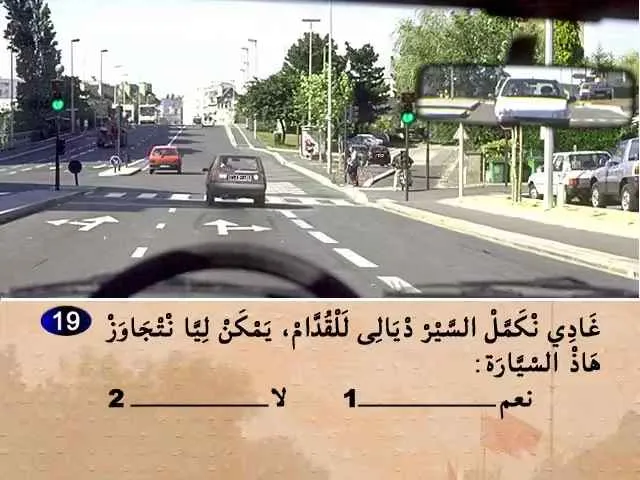
بيّن الجواب
الجواب الصحيح: 1
الضوء خضر وكاين مسلك على اليسار خاوي والتشوير فيه كيسمح نبدلو الاتجاه لليسار أو نكملو السير القدام، يعني يمكنني نستعمل هاد المسلك لتجاوز هاد الطوموبيل.
السؤال 20
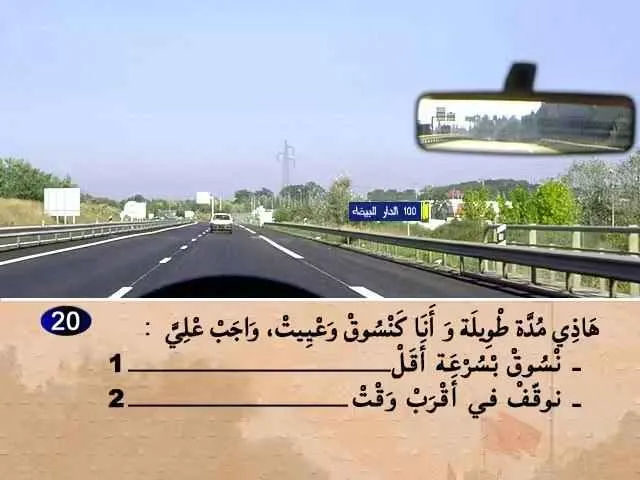
بيّن الجواب
الجواب الصحيح: 2
بحيث عييت، خاصني نوقف في أقرب وقت باش نرتاح ومن بعد نكمل الطريق.
السؤال 21
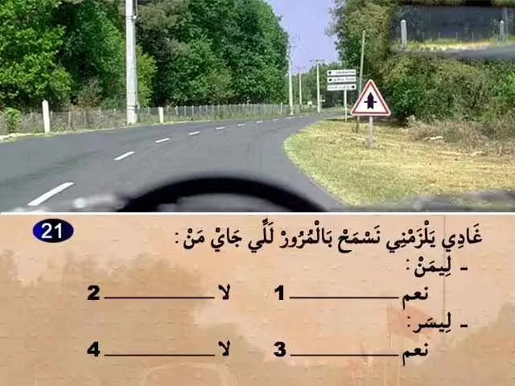
بيّن الجواب
الجواب الصحيح: 2 و 4
اللافتة الطرقية كتقول أن الطريق فيها أولوية وعندي حق الأسبقية، يعني ما خاصنيش نعطي حق الأسبقية للطوموبيلات اللي جاية من اليمين واليسار.
السؤال 22
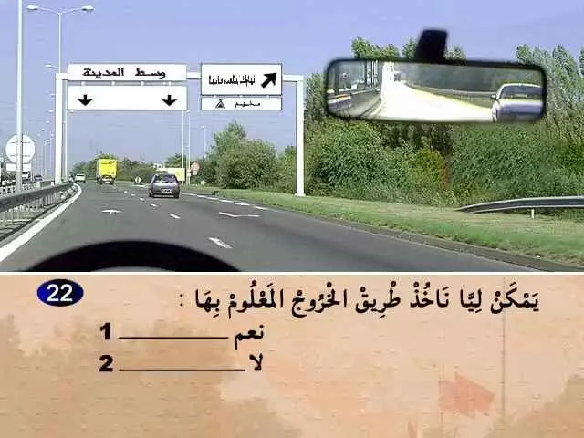
بيّن الجواب
الجواب الصحيح: 2
أنا فالممر الأيسر وعندي الحق غير نمشي نيشان وما نخرجش للطريق اللي على اليمين، وكاينة طوموبيل ورائي فمسلك اليمين.
السؤال 23
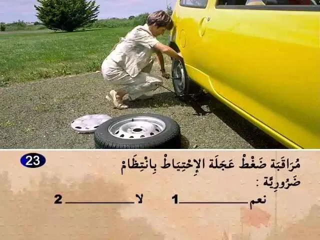
بيّن الجواب
الجواب الصحيح: 1
أكيد، مراقبة بعض التجهيزات ف الطوموبيل بانتظام ضرورية، ومن بينها مراقبة ضغط العجلات الاحتياطية.
السؤال 24
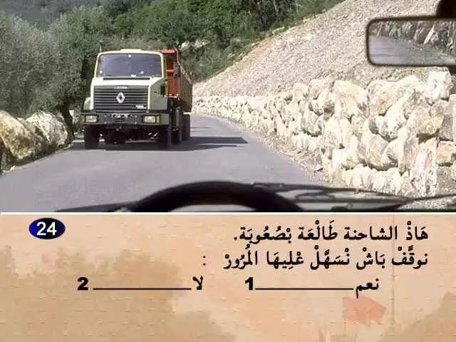
بيّن الجواب
الجواب الصحيح: 1
أنا ف منحدر، فهاد الحالة خاصني نوقف ونعطي الطريق باش نسهل مرور العربة اللي جاية ف الاتجاه المعاكس.
السؤال 25
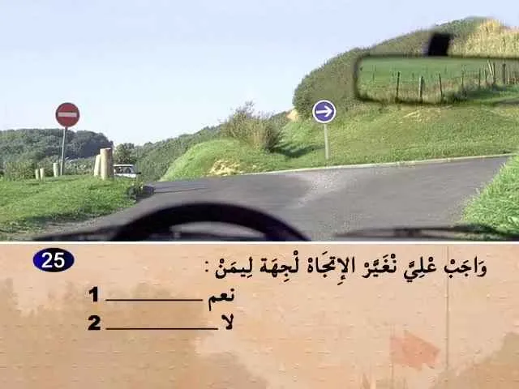
بيّن الجواب
الجواب الصحيح: 1
العلامة الطرقية اللي على اليسار كاتمنع علينا السير ف داك الاتجاه، والعلامة اللي قدامنا باللون الأزرق كتجبرنا نبدلو الاتجاه لليمين.
السؤال 26
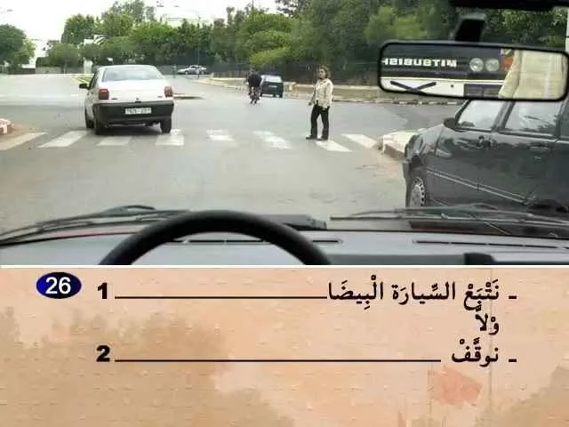
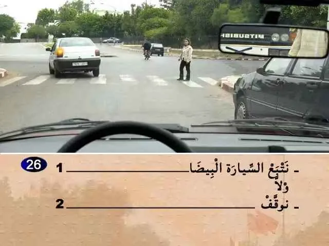
بيّن الجواب
الجواب الصحيح: 2
خاصني نوقف، حيث كاينين راجلين فممر الراجلين.
السؤال 27
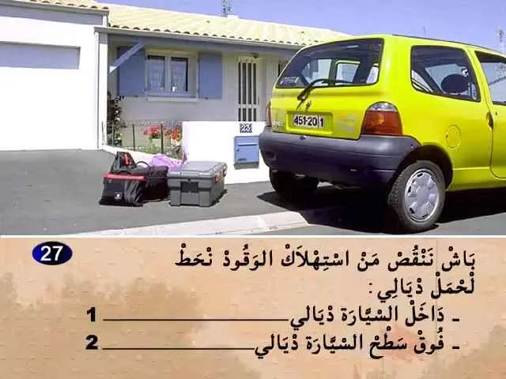
بيّن الجواب
الجواب الصحيح: 1
باش ما تستهلكش الطوموبيل الوقود بزاف، خاصني نحط الحوايج ديالي أو الحمولة داخل الطوموبيل وماشي فوق السطح.
السؤال 28
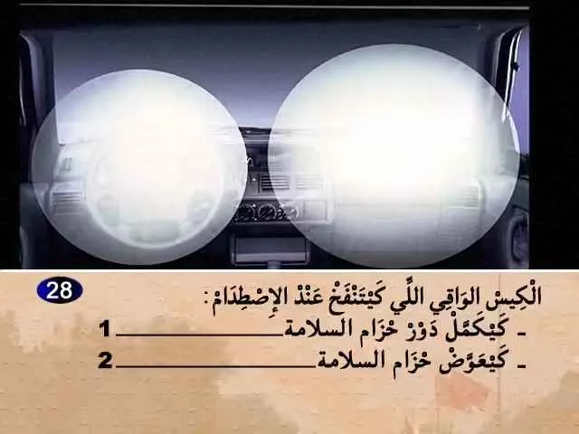
بيّن الجواب
الجواب الصحيح: 1
حزام السلامة إجباري وضروري، والكيس الواقي (Airbag) عند الاصطدام كيكمل دور حزام السلامة وما كيعوضوش.
السؤال 29
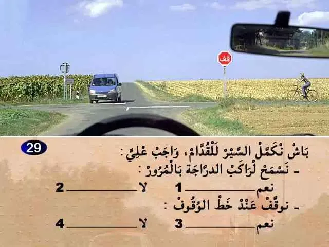
بيّن الجواب
الجواب الصحيح: 1 و 3
اللافتة الطرقية "قف" والخط ف الطريق يعني خاصني نوقف ونعطي حق الأسبقية لليمين واليسار، وبالطبع خاصني نوقف عند خط الوقوف.
السؤال 30
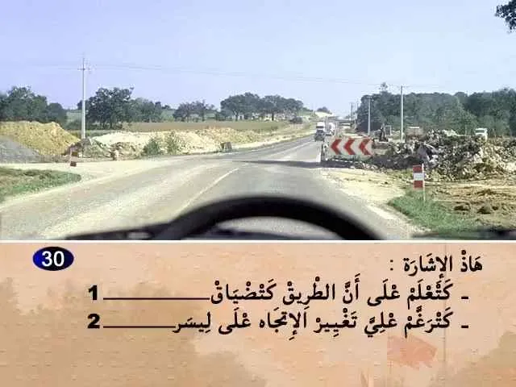
بيّن الجواب
الجواب الصحيح: 1
العلامة الطرقية البيضاء بأسهم حمراء كتعني أن الطريق غادي تضيق وماشي تغيير الاتجاه لليسار، حيث علامة تغيير الاتجاه لليسار كتكون باللون الأزرق وبسهم أبيض نحو اليسار.
السؤال 31
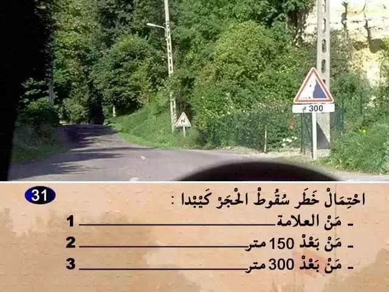
بيّن الجواب
الجواب الصحيح: 3
علامة الخطر كاتبدأ من مسافة 150 متر، ولكن فهاد الحالة كاين استثناء حيث كاينة علامة تكميلية فيها 300 متر اللي كتعني أن احتمال خطر سقوط الحجر غادي يبدأ من بعد 300 متر.
السؤال 32
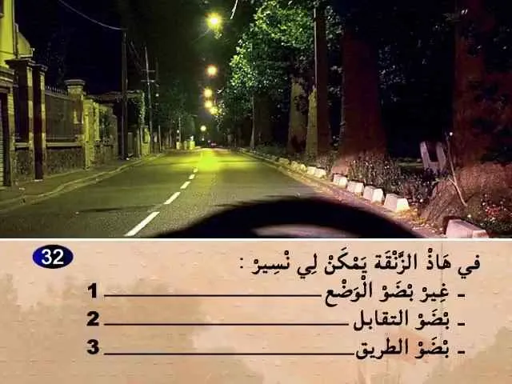
بيّن الجواب
الجواب الصحيح: 1 و 2
داخل المجمعات السكنية وف الليل، خاصنا نستعملو دائما أضواء الوضع والتقابل.
السؤال 33
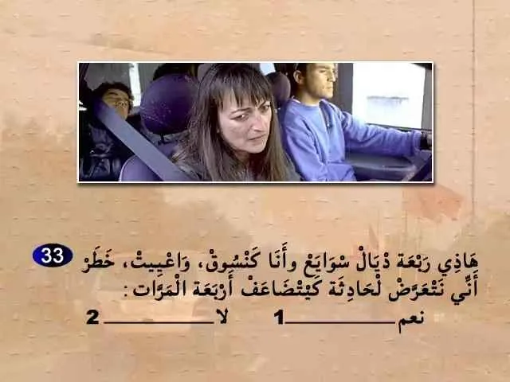
بيّن الجواب
الجواب الصحيح: 1
فالحالة العادية، السياقة لمدة ساعتين خاصها راحة لمدة 15 دقيقة، وفهاد الحالة 4 ساعات وأنا كنتسوق، يعني كاين خطر التعرض لحادثة أربع مرات اكثر من العادي.
السؤال 34
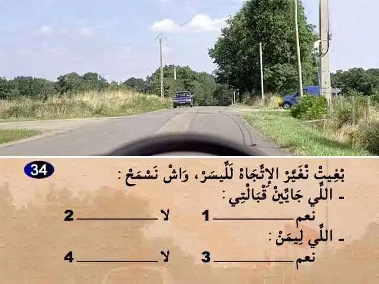
بيّن الجواب
الجواب الصحيح: 1 و 3
دائما فملتقيات الطرق الأسبقية لليمين إلا ما كانوش كاينين إشارات أو علامات، يعني خاصني نسمح للطوموبيل اللي على اليمين تدوز لولا، وبالنسبة للطوموبيل اللي مقابلة ليا، خاصني نسمح ليها تدوز حيث إلا بغيت نبدل الاتجاه لليسار غادي تولي هي على يميني، يعني خاصني نعطيها حق الأسبقية.
السؤال 35
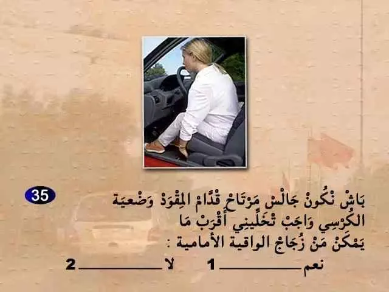
بيّن الجواب
الجواب الصحيح: 2
ما يمكنش نكون قريب بزاف من زجاج الطوموبيل الأمامي حيث ما غاديش نقدر نتحكم فالمقود وما غاديش نقدر نشوف المرايا الجانبية، يعني خاصني نخلّي مسافة بيني وبين الزجاج وما نكونش قريب منه بزاف.
السؤال 36
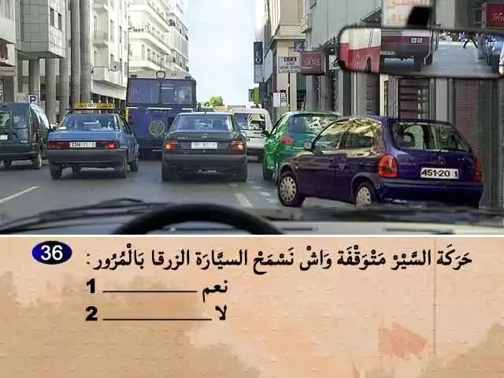
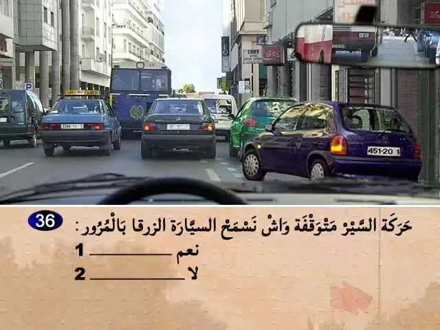
بيّن الجواب
الجواب الصحيح: 1
بما أن حركة السير واقفة، ما كاين باس نسمح للطوموبيل الزرقاء تدوز.
السؤال 37
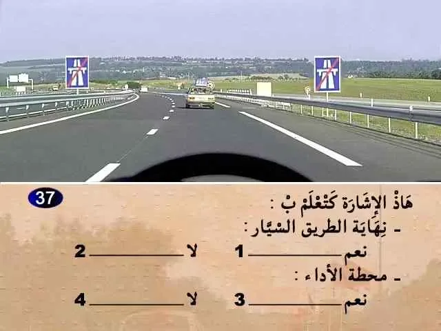
بيّن الجواب
الجواب الصحيح: 1 و 4
العلامات الطرقية كاينة ملي نكونو قريبين نخرجو من الطريق السيّار، وما كايناش شي علامة طرقية كتشير لوجود محطة للأداء.
السؤال 38
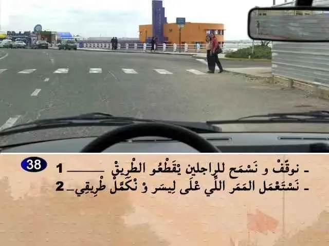
بيّن الجواب
الجواب الصحيح: 1
الراجلين فممر الراجلين خاصني نوقف ونعطيهم حق الأسبقية.
السؤال 39
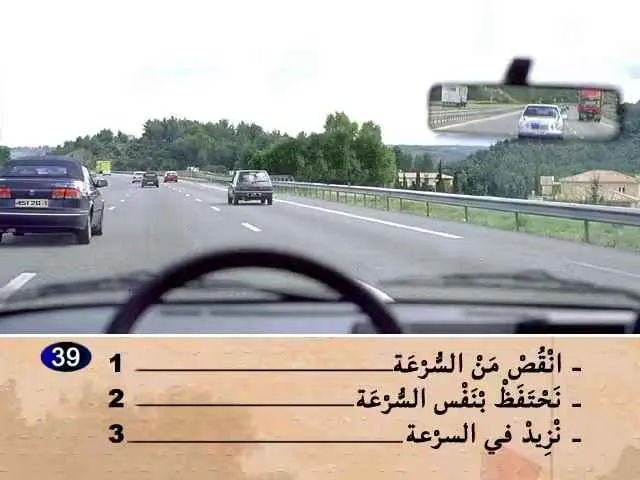
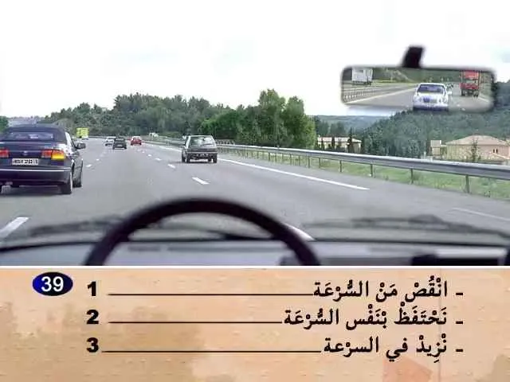
بيّن الجواب
الجواب الصحيح: 2
ملي شي عربة كتجاوزنا، خاصنا نحتافظو بنفس السرعة وبنفس المسلك ديالنا.
السؤال 40
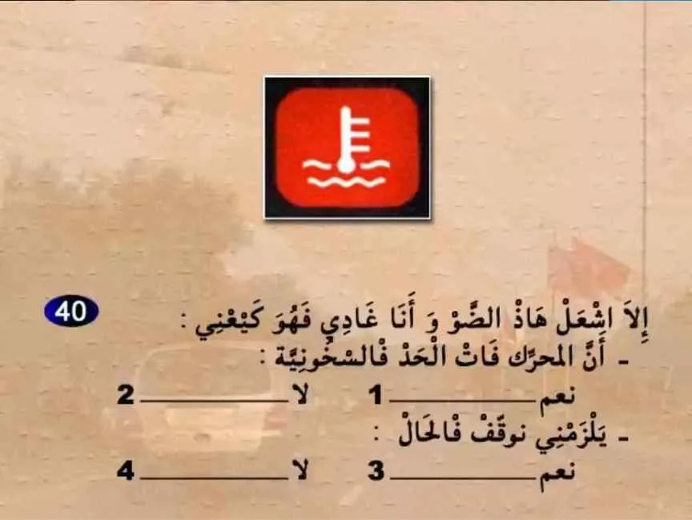
بيّن الجواب
الجواب الصحيح: 1 و 3
هاد الأضواء كيسموها الأضواء الجاذبة وكاينة في لوحة القيادة ديال الطوموبيل، ملي كيبان فيها اللون الأحمر فهذا كيعني أن المحرك تجاوز الحد الطبيعي للحرارة، وخاصني نوقف باش باش نشوف اش واقع.